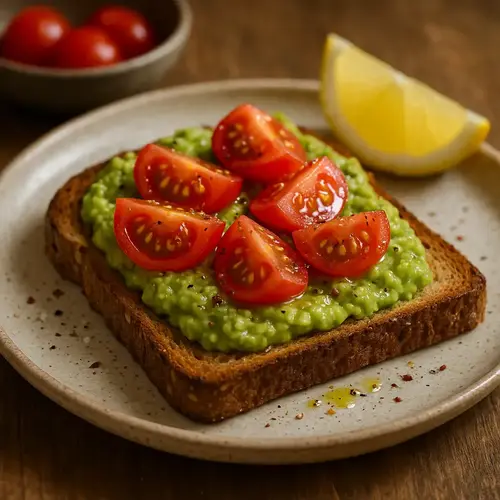
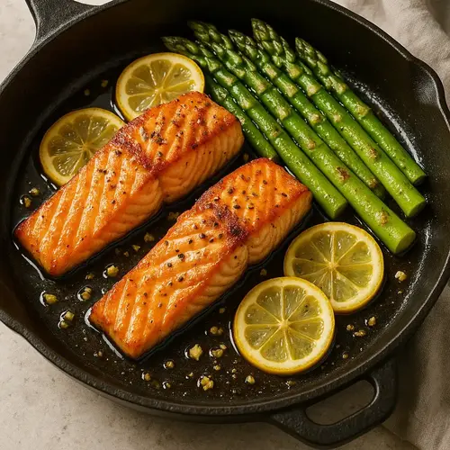
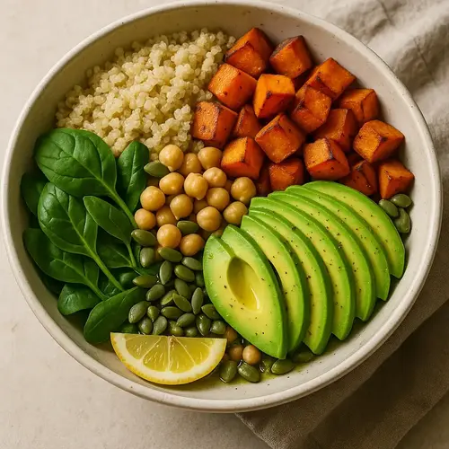

mediterranean chickpea salad
A refreshing, protein-packed salad tossed in a lemon-olive oil dressing
Servings: 2
 Prep:
10 mins
Prep:
10 mins
Cook: 10 min
Ingredients:
- 1 can (400 g) chickpeas, drained & rinsed
- 1 small cucumber, diced
- 1 cup cherry tomatoes, halved
- 1/2 red bell pepper, diced
- 1/4 red onion, finely chopped
- 2 Tbsp fresh parsley, chopped
- 2 Tbsp extra-virgin olive oil
- 1 Tbsp fresh lemon juice
- Sea salt & black pepper to taste
Instructions:
- In a large bowl combine chickpeas, cucumber, tomatoes, bell pepper, red onion and parsley
- Drizzle with olive oil and lemon juice
- Season with salt and pepper; toss to coat
- Serve immediately or chill up to 2 days
More recipes

Avocado & Tomato wholegrain Toast
Creamy avocado spread over toasted wholegrain bread, topped with juicy tomatoes
Servings: 1
 Prep:
5 mins
Prep:
5 mins
Cook: 5 min

one-pan lemon garlic salmon with asparagus
A 15-minute weeknight dinner of flaky salmon and tender asparagus
Servings: 2
 Prep:
5 mins
Prep:
5 mins
Cook: 12 min

quinoa veggie power bowl
A balanced bowl of fluffy quinoa, roasted veggies and healthy fats
Servings: 2
 Prep:
10 mins
Prep:
10 mins
Cook: 15 min